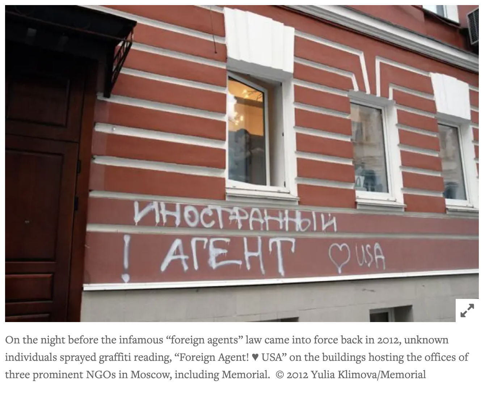

Is Gareth Jones a spy of truth operating inside an empire of lies—and if so, what does that say about the ethics of espionage itself?
Is the whistleblower narrative different from the noble traitor?
If Gareth Jones is the whistleblower in the free world, he is the spy and traitor in Stalinist Russia. Notably in the present day Russia, there is a foreign agent lawL by stigmatizing dissenting voices as “trojan horses”, “foreign agent” laws provide a legal tool to delegitimize and isolate them.

In this way, Mr. Jones becomes a counter-spy film: it adopts the mechanics of espionage (secrecy, surveillance, infiltration) but reorients them toward journalism and moral truth.
Mr. Jones fits into the spy-film narrative by reversing its logic. It uses the structure and tension of espionage but replaces the professional spy with a journalist and the goal of secrecy with the goal of truth.
Gareth Jones functions like a spy: he enters a closed, highly controlled state under Joseph Stalin, moves under surveillance, evades restrictions, and secretly gathers information about the Holodomor. This mirrors classic espionage elements—covert movement, danger, and the acquisition of forbidden knowledge.
However, unlike a traditional spy (such as James Bond), Jones has no institutional backing and no mission to protect secrets. Instead, his purpose is to expose them. The film also highlights disinformation through figures like Walter Duranty, who acts almost like a propaganda agent, reinforcing the idea that controlling information is central to power—just as in spy films.
Walter Duranty as a classical despicable spy
serving the empires (Soviet, American, and British) at the expense of human rights and moral integrity.